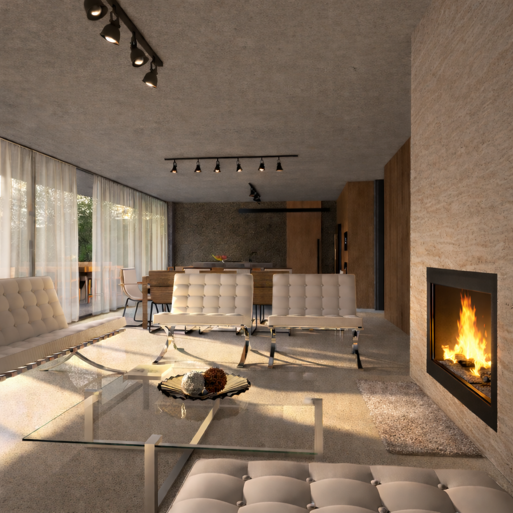
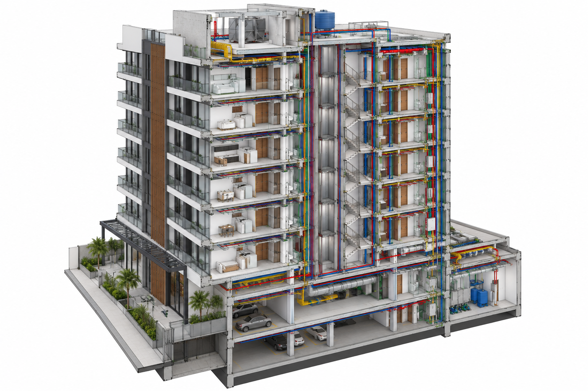

Projetos
Projetos selecionados
Arquitetura, interiores e espaços contemporâneos desenvolvidos com foco em funcionalidade, estética e bem-estar.
Serviços
Soluções completas
em arquitetura
Do estudo inicial ao acompanhamento da obra, atuamos de forma integrada para transformar ideias em espaços reais, com qualidade técnica e estética.
Arquitetura
Projetos residenciais, comerciais e institucionais.
Interiores
Espaços funcionais e personalizados.
Reformas
Planejamento e compatibilização.
Consultoria
Análise técnica e soluções sob medida.
Acompanhamento de obras
Gestão e apoio técnico em todas as etapas.
Perícia
Vistorias, análises e pareceres técnicos.
Laudos técnicos
Laudos para regularização, compra e venda, patologias e demais finalidades.

Escritório
Arquitetura
com propósito
A RSato Arquitetura desenvolve projetos que conciliam estética, funcionalidade e viabilidade, com atenção às pessoas e ao contexto em que estão inseridos.
Fale com o escritório →Cursos
Formação em
ferramentas profissionais
Cursos presenciais de Revit e AutoCAD, com foco em aplicação prática, representação técnica e desenvolvimento de projetos.

Revit
Modelagem e representação

AutoCAD
Desenho técnico e projetos
Contato
Vamos conversar
sobre o seu projeto?
Entre em contato para orçamentos, consultorias, perícias, laudos ou informações sobre os cursos.
WhatsApp →